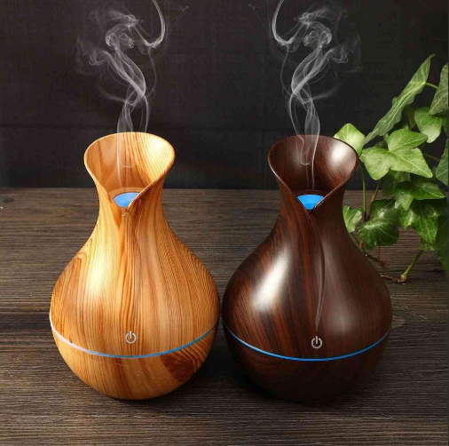

Зачем нужно увлажнять воздух?
Немногие четко осознают, зачем все-таки нужно увеличивать процент влажности в помещении. Ответ на этот вопрос довольно прост – в квартирах, где люди спят и проводят большую часть своей жизни, на человеческое здоровье влияет 3 главных фактора. Первые 2 фактора – это температурный уровень и чистота помещений. Они отвечают за комфорт, хорошее настроение и не позволяют вам болеть. Третий фактор – это уровень влажности воздуха, который должен составлять от 45 до 80% для полноценной и здоровой жизнедеятельности.
Как определить влажность воздуха?
На рынке представлено немало увлажнителей воздуха трех основных типов: традиционные, паровые и ультразвуковые. Производители каждого гарантируют, что польза от увлажнения будет максимальной, а вред, напротив, минимальным.
Перед тем как приобретать увлажнитель воздуха, следует определиться с тем, нужно ли вообще увлажнять воздух. Избыток взвешенной в нем влаги также может иметь негативные последствия.
Влажность измеряется гигрометром. Лучше приобрести бытовую модель гигрометра или любого мультифункционального устройства с гигрометром. Влажность в доме меняется в зависимости от времени года, а в квартирах многоэтажек с включением центрального отопления — меняется кардинально.
Мультифункциональные электронные устройства с гигрометром позволяют контролировать влажность воздуха в комнате. Но несмотря на привлекательный внешний вид, они менее надежны, чем механические гигрометры
Наши легкие привычны к воздуху влажностью от 40% до 60%. Зимой влажность в жилых домах меньше, летом больше. Считается, что механические гигрометры надежнее, чем электронные, но электронные точнее.
Чем опасен слишком сухой воздух?
Слишком сухой воздух в помещении противопоказан в первую очередь аллергикам и людям с заболеваниями дыхательных путей. Сухой воздух не связывает пыль, мельчайшие частички которой попадают в легкие при каждом вдохе.
В итоге даже у здорового человека возникают такие симптомы как:
- затрудненное дыхание;
- першение в горле;
- постоянная жажда;
- желание откашляться
Астматик же может начать в буквальном смысле задыхаться. Для людей, страдающих от хронических заболеваний дыхательных путей, увлажнитель воздуха в квартире является такой же необходимостью как лекарства.
Центральное отопление многоквартирных домов холодной зимой иссушает воздух. Для того, чтобы этого избежать необходимо приобрести увлажнитель. Особенно опасен сухой воздух в старых домах, система вентиляции которых далека от идеальной. Центральное отопление многоэтажек также “сушит” воздух.Закрытые, а иногда еще по-старинке заклеенные окна и электрообогреватели в старых квартирах только ухудшают ситуацию. В таких квартирах буквально становится сложно дышать. Но дискомфорт – это только часть проблемы.
Функции современных увлажнителей
Для чего нужен увлажнитель воздуха дома? Большинство увлажнителей имеют полезную функцию ароматизации и ингаляции.
То есть можно по своему вкусу приобретать масла и другие вещества, чтобы насыщать ими атмосферу дома.
Ингаляции с физраствором, отваром трав, лазолваном или амбробеной можно делать при первых симптомах заболевания, сухом кашле. При насморке помогают эфирные масла, например, мяты и эвкалипта. Но не стоит увлекаться этим методом при повышенной температуре, давлении, проблемах с сердцем, воспалениях в острой стадии, гнойных процессах и туберкулёзе.
Увлажнитель воздуха: польза и вред, мнение врачей
Климатическая техника предназначена для повышения влажности воздуха в помещении, а также поддержания комфортных условий для проживания человека. Если рассматривать такой аспект эксплуатации приборов, как вред или польза увлажнителей воздуха, не стоит забывать, что влиянию поддаются даже предметы мебели, отделка помещения и растения.
С помощью увлажнителя в комнате поддерживаются комфортные условия для проживания
Увлажнитель воздуха на самом деле не создает идеальный микроклимат, ведь он влияет только на одну из составляющих атмосферы помещения – влажность. На самочувствие и здоровье человека влияют и другие факторы, совокупность которых и создает оптимальную для проживания среду.
Что это за прибор и для чего он нужен?
Основная задача воздухоувлажнителя – избавить от сухости воздуха. Как показали исследования ВОЗ, зимой уровень влажности в домах редко превышает 30%. Например, наружный воздух с температурой -8 °С попадает в комнату и нагревается там до +20 °С. Кондиционер и батареи сушат его и уменьшают относительную влажность порой до 15%. А нормальный показатель должен быть не менее 55%. Для этого и придумали прибор – увлажнитель воздуха. Он насыщает воздух влагой, доводя ее до нужного уровня. Это помогает избавиться от массы проблем.
Благоприятное воздействие на организм
Организм человека на 90% состоит из воды, но для обеспечения его нормального функционирования все же требуется обеспечить нормальный уровень влажности в помещении.
Состояние глаз. Если долго сидеть за компьютером или телефоном, может начаться покраснение или шелушение глаз, ощущение дискомфорта и сухости. Без должного ухода здесь не обойтись. Именно поэтому и влажность в помещении должна быть нормальной, так глазам будет комфортнее.
Укрепление иммунитета. В сухом воздухе повышается риск заражения ОРЗ, так как вирусы и бактерии любят сухую среду, и активно в ней размножаются. Негативное влияние может оказать и влажный, и сухой воздух.
Плюсы и минусы увлажнителя воздуха для микроклимата помещения
Затрагивая тему преимуществ и недостатков увлажнителей, стоит отметить, что одно и то же количество водяных паров может по-разному сказываться на самочувствии человека. Чем выше температурный показатель воздуха, тем больше влажности он впитает. Это можно проследить по определенной закономерности. Так, если в 1 м³ воздуха содержится 2,5 мг воды, а температура помещения равна 1°С, тогда относительная влажность будет составлять 50%, ведь 1 м³ воздуха сможет впитать не более 5 мг воды.
В отопительный сезон воздух нагревается до температуры 21°С, из-за чего влажность падает до 14%. Это обуславливается тем, что сухой воздух способен вместить уже не 5, а 18 мг воды. При этом человек испытывает ощущение дискомфорта, от которого можно избавиться, восполнив влажность до необходимого процента за счет увлажнителя воздуха.